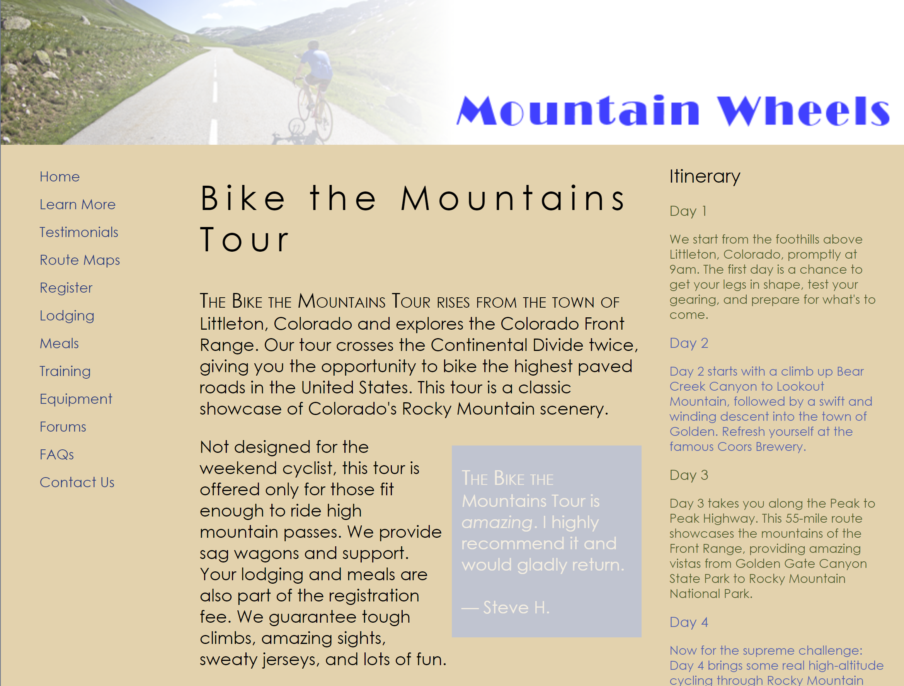

Try It Out Activities
Red Ball Build A Pizza Form This activity tasked students with implementing a validated web form using radio buttons, a select, a slider and checkboxes.
Red Ball Pizza Customer Information Form This activity tasked students with implementing a validated web form that includes text inputs with pattern matching, time inputs and a submit button.
Kathleen Ferris Ancestry This activity required students to implement advanced image manipulation techniques.
Ferris Family Ancestry This activity tasked students with adding text and box gradients and shadows, as well as images as backgrounds.
Dakota Listener Radio - Morning Schedule Students were tasked with using an HTML table layout to design a schedule for radio programming.
Pandaisia Chocolates - March Specials This activity challenged students to implement a layout using a 12-column grid system and floats.
Mountain Wheels This activity asked students to try their hand at implementing semantic and organized CSS. Steph again scored perfectly, with Dr. Fry complimenting Well done. Perfect implementation.

Mobile Panini A basic HTML exercise that asked the student to implement knowledge learned in Curbside Thai. While Steph finds CSS confounding, at least compared to HTML, she scored perfectly on her project, with Dr. Fry saying Good Progress and Well Done. .
Stephanie Stamm • CS 2350 Client Side Web Development